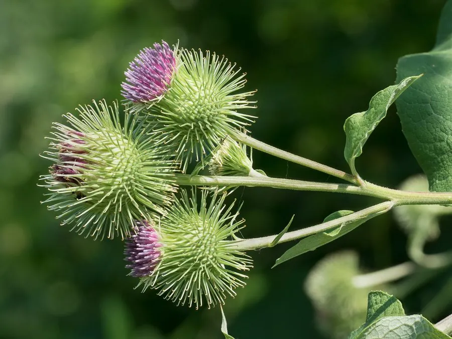

农作物与经济植物 · 植物界
牛蒡 Arctium lappa

牛蒡的肉质根细长，可炖汤、炒食和泡茶，在日本被称为“东洋参”，是药食两用的根菜作物，栽培广泛。
- 分类
- 门被子植物门纲双子叶植物纲目菊目科菊科属牛蒡属
- 栖息环境
- 温暖湿润的沙壤土，土层需深厚疏松
- 地理分布
- 原产欧洲与亚洲，现中国、日本等地广泛栽培
- 保护级别
- 暂无评估（栽培作物）
物种志
牛蒡是菊科二年生草本，株高 1–2 m。第一年只长叶和肉质根，第二年抽薹开花。叶片大，心形或宽卵形，表面粗糙，背面有白色绒毛；根肉质、圆柱形，长可达 1 m，外皮灰褐色。花为头状花序，紫红色，总苞片呈钩状，能附着在动物身上传播种子。
牛蒡原产欧洲与亚洲，中国栽培历史悠久，日本将其发展为重要蔬菜。它喜温暖湿润、光照充足，适宜在土层深厚、疏松的沙壤土中种植，深根性，要求土壤疏松以便肉质根伸长。肉质根可炖汤、炒食、凉拌、泡茶，有特殊的香气；富含膳食纤维、菊糖和矿物质。中医认为牛蒡有疏散风热、清热解毒之效。日本、中国台湾等地消费量大，中国江苏、山东等地有规模化种植。
形态与习性
- 株高1–2 m
- 根肉质圆柱形，长可达 1 m
- 叶大，心形，背面有白毛
- 花头状花序，紫红色
- 用途炖汤、炒食、泡茶，药食两用
趣味知识
- 牛蒡的根能长到 1 m 长，所以要求土壤深厚疏松。
- 牛蒡在日本被称为“东洋参”，是常见的药食两用蔬菜。
- 牛蒡的花序总苞片有钩，会粘在动物皮毛上传播种子。